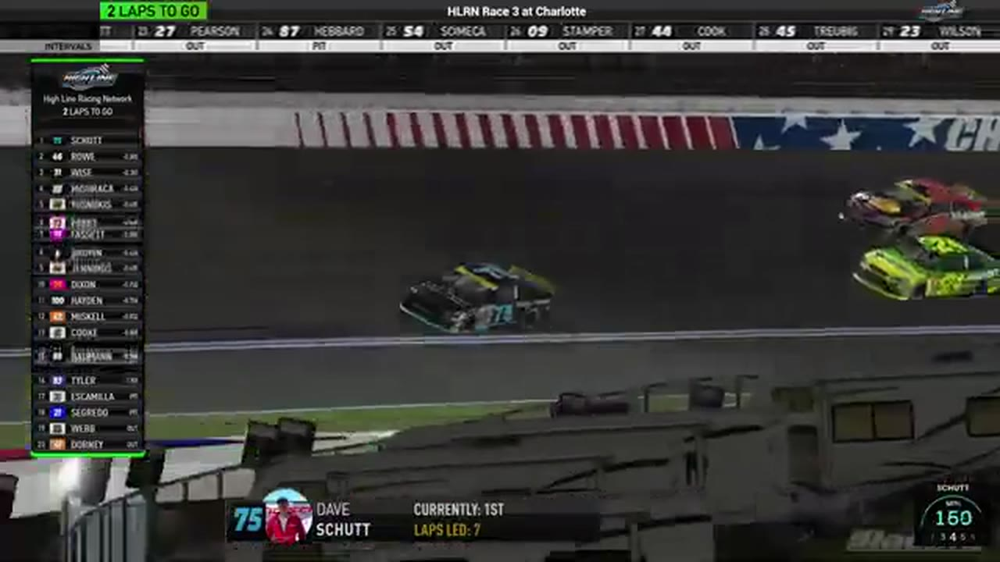

Dave Schutt
Team assignment not stated in the structured owner record.
A PODIUM FILE WITH AN OPEN RESULT HORIZON
- Official files
- 8
- Central editions
- 0
- Exact tape cues
- 6
- Accepted podiums
- 1
Dave Schutt has 1 position-specific top-three receipt: S1 R3 at Charlotte (P3). No feature win is currently supported in the accepted result ledger. A consistently stated team affiliation remains open for owner review. The currently indexed source window runs from November 17, 2025 through February 11, 2026.
The official tape index connects the name to 8 race files, 0 Central editions, and 6 primary-broadcast navigation cues. The densest direct-tape categories are incident (2 cues) and battle (1 cue). Those counts describe where the name is easiest to find; they are not fault, pace, or performance grades. A source-attributed car frame is published with its original video and timestamp. That is the current discovery map for Dave Schutt.
That is enough for a real result dossier without pretending the archive knows every start or finish. Owner classifications can extend the record later through the same stable race IDs. No Highline Live bonus file is currently attached to this identity. The displayed name is labeled broadcast lower third confirmed; that status remains visible so an owner roster can strengthen or correct the identity without rewriting the evidence trail. Those boundaries define Dave Schutt's public HLRN file.
6 featured race-tape cues
These are discovery routes into complete HLRN broadcasts, not performance grades or inferred results.
- S1 / R3 · RESULT
Joseph Yusnukas is confirmed atop the Charlotte results
The primary broadcast's closing readout records Joseph Yusnukas, Dennis Misuraca, and Dave Schutt as the Charlotte podium. Misuraca and Schutt are confirmed by HLRN broadcast graphics; the spelling of Yusnukas follows the clearest repeated channel rendering and remains open to owner confirmation.
Charlotte - S1 / R3 · FINISH
Dave Schutt and Craig Rowe enter the final-lap decision
S1 / R3 at 1:47:53: The white flag opens the final-lap decision at Charlotte, with Dave Schutt, Craig Rowe, and Scott Wise named in the decisive group. The cut continues through the immediate finish call on the full primary broadcast.
Charlotte - S1 / R11 · BATTLE
Nick Bowman becomes the Roval's late-race benchmark
After closing the Jerry Fassett and Dave Schutt replay, HLRN returns live and frames Nick Bowman as the driver Brandon Showers, Trevor Haley, and Joe Quan must beat. This is a late-race form check, not an incident involving the leaders.
Charlotte Roval - S1 / R3 · RESTART
Dave Schutt and Timothy Tyler bring Charlotte back to green
S1 / R3 at 1:41:44: Dave Schutt, Timothy Tyler, Scott Wise, and Cory Cook are in the booth's front-pack call as Charlotte returns to green. The cut keeps the restart launch and the first lap of lane development together.
Charlotte - S1 / R12 · INCIDENT
Dave Schutt spins during Daytona's pit-cycle handoff
The first pit group exits with Juan Escamilla, Trevor Haley, and James Smith in view before Dave Schutt and the No. 29 spin. Brittany Mitchell then inherits the tracked lead while still needing fuel.
Daytona - S1 / R3 · INCIDENT
Justin Lee Pearson and Brian Hebert surface in the Charlotte caution replay
S1 / R3 at 1:20:59: The caution sequence centers the replay call on Justin Lee Pearson, Brian Hebert, Jim Sagredo, and Dave Schutt. This is a source-bounded incident window; it preserves what the booth reviews without assigning unsupported fault.
Charlotte
Verified team history is not consistently stated. Complete starts, finishes, and points remain open beyond the recovered results. The public spelling has broadcast identity support; an owner roster can still add legal-name, number, and team-history detail.